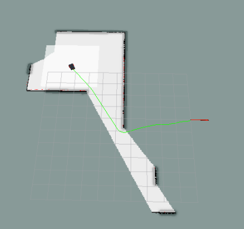

Back to Home
Command Line Interface of the project - an Overview
Available Functionalities
Here are the implemented functionalities you can use. The command line interface is case-insensitive, and accepts both literal command and number command.
reach_random_pos : the controller asks for a new target position to a dedicated server, and drives the robot towards the position using one of the available motion planning algorithm bug0 and move_base. The command starts a backgrond process.reach_user_pos : foreground process. The program asks the use for a target, then sends it to the motion planning algorithm and drives the robot.wall_follow : the robot starts to follow the external walls of the environment. Background process.last_pos : the command stops any background process.change_motion_planning_algorithm : you can decide the motion planning algorith between bug0 or move_base.help : print an help on the screen.exit : close the command line interface.
Base Commands
When this message appears on the screen, you can start typing:
Commands are always case-insensitive. Moreover, you can write either the command or the number corresponding to the command. I prefer numbers, because I'm terribly lazy ;-)
Any unexisting command will generate this output:
-> 64646846
[INFO] [1624771349.158237]: [user console] ERROR: not a valid command!
need infos? write ''help
->
Two basic commands. exit for closing the application:
-> exit
[INFO] [1624723424.332583, 121.329000]: [user console] exit command received
[INFO] [1624723424.335212, 121.331000]: [user_console] is OFFLINE
Also the corresponding number works. For exit, the number is 7:
-> 7
[INFO] [1624723424.332583, 121.329000]: [user console] exit command received
[INFO] [1624723424.335212, 121.331000]: [user_console] is OFFLINE
Another useful command is help (number 6). This is the corresponding output:
-> 6
Available commands:
[no.1] reach_random_pos:
periodically ask a position to the server, then try and reach it.
[no.2] reach_user_pos:
ask to the user a position, then try and reach it.
[no.3] wall_follow:
use the component wall_follower.
[no.4] last_pos:
Stop any ongoing movement
[no.5] change_motion_planning_algorithm:
select your motion planning algorithm between 'move_base' and 'bug0'
[no.6] help:
print this help
[no.7] exit:
Close this program.
->
Number 5 : change_motion_planning_algorithm
The default algorithm is move_base, but you can change it simply invoking this command. Let's change from move_base to bug0:
-> 5
[INFO] [1624723732.513973]: [user_console] actually you're using this motion planning algorithm: 'move_base'
[user_console] would you like to change with this? 'bug0' [Y/n]
[Y/n]y
[INFO] [1624723735.415190]: [user_console] using algorithm: 'bug0'
->
In the same way, you can change from bug0 to move_base:
-> 5
[INFO] [1624723791.762845]: [user_console] actually you're using this motion planning algorithm: 'bug0'
[user_console] would you like to change with this? 'move_base' [Y/n]
[Y/n]y
[INFO] [1624723793.197886]: [user_console] using algorithm: 'move_base'
->
A very important remark: you cannot change the planning angorithm when a background process is running. The output will be this:
-> 1
[INFO] [1624723822.944849]: [user_console] reach_random_pos STARTED using 'move_base'
-> 5
[WARN] [1624723825.508154]: [user_console] ATTENTION: the robot is busy now!
Please turn off the previous command (use last_pos) before calling this one.
->
Number 1 : reach_random_pos
When the command is issued, a background process is started. The system generates a random target, then drives the robot towards it. This functionality supports two different motion planning algorithms, move_base and bug0.
Using move_base, the command turns on the node reach_random_pos_service.
-> 1
[INFO] [1624723822.944849]: [user_console] reach_random_pos STARTED using 'move_base'
->
If you change the motion planning algorithm to bug0, the command will turn on the node bug0.py.
-> 5
[INFO] [1624771080.290901]: [user_console] actually you're using this motion planning algorithm: 'move_base'
[user_console] would you like to change with this? 'bug0' [Y/n]
[Y/n]y
[INFO] [1624771082.703447]: [user_console] using algorithm: 'bug0'
-> 1
[INFO] [1624771083.741804]: [user_console] reach_random_pos STARTED using 'bug0'
->
If you try and execute the command when the same command is running in background, the command will fail with this message as output:
-> 1
[INFO] [1624771186.653258]: [user_console] reach_random_pos STARTED using 'move_base'
-> 1
[WARN] [1624771187.993608]: [user_console] ATTENTION: each_random_pos already active.
->
The same will happen if you try and launch reach_random_pos after wall_follow:
-> wall_follow
[INFO] [1624771297.601747]: [user_console] wall follow is ON
-> reach_RANDOM_pos
[WARN] [1624771304.720642]: [user_console] ATTENTION: the robot is busy!
Please turn off the previous command (use last_pos) before calling this one.
->
Number 2 : reach_user_pos
A foreground process is runned: the console asks a destination (x,y) to the user, then tries and reach it using either move_base or bug0.
The user can choose only one among the predefined positions. Otherwise, the console will report an error message like this:
-> 2
[INFO] [1624771579.096699]: [user console] Give me a target:
available: [(-4,-3);(-4,2);(-4,7);(5,-7);(5,-3);(5,1)]
x : -4
y : 1
[ERROR] [1624771586.634569]: [user console] ERROR: not a valid position.
->
Let's try it with move_base:
-> 2
[INFO] [1624772097.406076, 32.090000]: [user console] Give me a target:
available: [(-4,-3);(-4,2);(-4,7);(5,-7);(5,-3);(5,1)]
x : 5
y : 1
[INFO] [1624772098.968914, 33.554000]: [user console] selected: ( 5.000000, 1.000000 )
[INFO] [1624772098.970554, 33.556000]: [user_console] reaching the position...
[INFO] [1624772098.978062, 33.563000]: [reach_user_pos_service] sending target to MoveBase ...
[INFO] [1624772098.981197, 33.564000]: [reach_user_pos_service] reaching the position...
[INFO] [1624772138.070837, 68.139000]: [reach_user_pos_service] position reached!
[INFO] [1624772138.073412, 68.142000]: [user_console] Arrived.
->
You can see the result on Rviz: the component move_base generates a path ending at the goal position.

The same, using bug0. Note well: the algorithm is not so efficient as the other one; at some point, the robot could getting stuck, or entering in a loop.
-> 5
[INFO] [1624784291.929529, 169.807000]: [user_console] actually you're using this motion planning algorithm: 'move_base'
[user_console] would you like to change with this? 'bug0' [Y/n]
[Y/n]y
[INFO] [1624784293.326135, 171.101000]: [user_console] using algorithm: 'bug0'
-> 2
[INFO] [1624784297.949059, 175.356000]: [user console] Give me a target:
available: [(-4,-3);(-4,2);(-4,7);(5,-7);(5,-3);(5,1)]
x : -4
y : -3
[INFO] [1624784306.264008, 183.028000]: [user console] selected: ( -4.000000, -3.000000 )
[INFO] [1624784306.265668, 183.028000]: [user_console] reaching the position...
[INFO] [1624784356.586834, 229.401000]: [user_console] Arrived.
->
Of course, you cannot use this command when another background process is running.
-> 3
[INFO] [1624773080.381022, 290.065000]: [user_console] wall follow is ON
-> 2
[WARN] [1624773081.493389, 291.125000]: [user_console] ATTENTION: the robot is busy now!
Please turn off the previous command (use last_pos) before calling this one.
->
Number 3 : wall follower
The command wall_follow, as the name says, launches the behaviour wall_follow: the robot will start following the walls of the environment, keeping stick on them as much as possible.
-> 3
[INFO] [1624773221.424055, 420.131000]: [user_console] wall follow is ON
->
This command runs a background process. You cannot re-launch the command:
-> 3
[INFO] [1624773221.424055, 420.131000]: [user_console] wall follow is ON
-> 3
[INFO] [1624773263.032994, 457.988000]: [user_console] wall_follow already active.
->
And, of course, you cannot launch it when another background process is turned on:
-> 1
[INFO] [1624773321.580235, 512.033000]: [user_console] reach_random_pos STARTED using 'move_base'
-> 3
[WARN] [1624773326.318765, 516.448000]: [user_console] ATTENTION: the robot is busy now!
Please turn off the previous command (use last_pos) before calling this one.
->
Number 4 : last_pos
The command interrupts all the running background processes.
If you launch the command without any running background process, the output will be this:
-> 4
[WARN] [1624773514.053870, 34.427000]: [user_console] WARNING: no activity to stop.
->
Using move_base, the command waits until the robot has reached the target, then turns off the node reach_random_pos_service:
-> 1
[INFO] [1624773594.674752, 108.942000]: [user_console] reach_random_pos STARTED using 'move_base'
-> 4
[INFO] [1624773596.242014, 110.381000]: [user_console] sending the stop signal...
[INFO] [1624773596.258354, 110.387000]: [user_console] waiting for the robot to end the path...
[INFO] [1624773626.392073, 138.021000]: [user_console] reach_random_pos STOPPED.
->
Using bug0, the command will cause the immediate turning-off of the node bug0.py:
-> 5
[INFO] [1624773696.497869, 202.236000]: [user_console] actually you're using this motion planning algorithm: 'move_base'
[user_console] would you like to change with this? 'bug0' [Y/n]
[Y/n]y
[INFO] [1624773697.907979, 203.510000]: [user_console] using algorithm: 'bug0'
-> 1
[INFO] [1624773701.253208, 206.525000]: [user_console] reach_random_pos STARTED using 'bug0'
-> 4
[INFO] [1624773703.867423, 208.934000]: [user_console] sending the stop signal...
[INFO] [1624773703.884856, 208.951000]: [user_console] reach_random_pos STOPPED.
->
Also wall_follow can be interrupted. The command immediately stops that process:
-> 3
[INFO] [1624773770.924814, 270.528000]: [user_console] wall follow is ON
-> 4
[INFO] [1624773772.969854, 272.443000]: [user_console] wall follow is OFF
->
 1.9.1
1.9.1